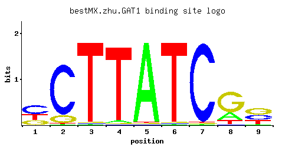

GAT1
YFL021W, MEP80, NIL1
Transcriptional activator of genes involved in nitrogen catabolite repression; contains a GATA-1-type zinc finger DNA-binding motif; activity and localization regulated by nitrogen limitation and Ure2p
Best-performing DNA-binding model.

View and copy the recommended matrices ↘
A | 0.01 0.01 0.01 0.03 0.97 0.01 0.01 0.23 0.02 C | 0.46 0.85 0.01 0.01 0.01 0.01 0.97 0.01 0.32 G | 0.24 0.13 0.01 0.01 0.01 0.01 0.01 0.66 0.43 T | 0.29 0.01 0.97 0.95 0.01 0.97 0.01 0.11 0.24
A | 1 1 1 3 97 1 1 23 2 C | 46 85 1 1 1 1 97 1 32 G | 24 13 1 1 1 1 1 66 43 T | 28 1 97 95 1 97 1 11 24
A | -3.47 -3.47 -3.47 -2.37 1.11 -3.47 -3.47 -0.33 -2.77 C | 0.94 1.55 -2.89 -2.89 -2.89 -2.89 1.68 -2.89 0.58 G | 0.29 -0.33 -2.89 -2.89 -2.89 -2.89 -2.89 1.30 0.87 T | -0.10 -3.47 1.11 1.09 -3.47 1.11 -3.47 -1.07 -0.29
Alternative candidate matrices 13
Historical matrix candidates from the original ScerTF database. Expand a source to inspect its original logo, scores, and matrix values.
GAT1Badis et. al.P = 0.009288View matrix ↘
GAT1_AFoat et. al.P = 0.3351View matrix ↘
GAT1_BFoat et. al.P = 0.0001079View matrix ↘
GAT1_CFoat et. al.P = 7.51e-07View matrix ↘
GAT1_DFoat et. al.P = 1View matrix ↘
GAT1_AFordyce et. al.P = 0.6828View matrix ↘
GAT1_BFordyce et. al.P = 0.5662View matrix ↘
GAT1_CFordyce et. al.P = 0.1834View matrix ↘
GAT1Harbison et. al.P = 0.004728View matrix ↘
GAT1Macisaac et. alP = 0.004728View matrix ↘
GAT1Morozov et. al.P = 0.7783View matrix ↘
GAT1Pachkov et alP = 0.007118View matrix ↘
GAT1Zhao and StormoP = 0.01709View matrix ↘
Gene-level annotations and interactions.
Genes bound in ChIP-chip experiments 72 genes
YAL012W, YAL022C, YAL033W, YAL034C, YBL015W, YBR049C, YBR051W, YBR058C-A, YBR059C, YBR230C, YBR266C, YBR268W, YBR269C, YCL068C, YDL079C, YDL173W, YDL174C, YDR019C, YDR186C, YDR188W, YDR303C, YDR474C, YER187W, YER187W-A, YFL023W, YFL024C, YFR017C, YFR051C, YFR052W, YGR037C, YGR038W, YGR180C, YGR257C, YHR021C, YHR021W-A, YHR179W, YHR193C, YHR194W, YHR199C, YHR200W, YIL012W, YIL013C, YIL041W, YIL042C, YJL088W, YJL143W, YJL210W, YJL212C, YLR378C, YLR380W, YLR439W, YML098W, YML099C, YML115C, YMR034C, YMR035W, YMR192W, YMR302C, YNL098C, YNL303W, YNL304W, YNL305C, YNL321W, YNL322C, YNR017W, YOL140W, YOR113W, YOR162C, YOR163W, YOR317W, YPL177C, YPL265W
Genes affected by TF deletion 20 genes
YNL213C, YDR371W, YPL016W, YMR256C, YIL045W, YOR043W, YJR148W, YNL278W, YDL198C, YFL021W, YGL029W, YGR164W, YJR095W, YNL064C, YJL036W, YOL119C, YHR136C, YDL091C, YFL068W, YNR048W
Predicted TF–TF partners 1 genes
DAL80